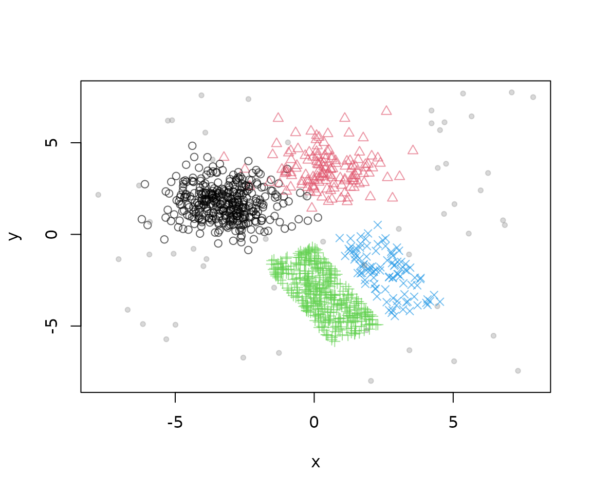
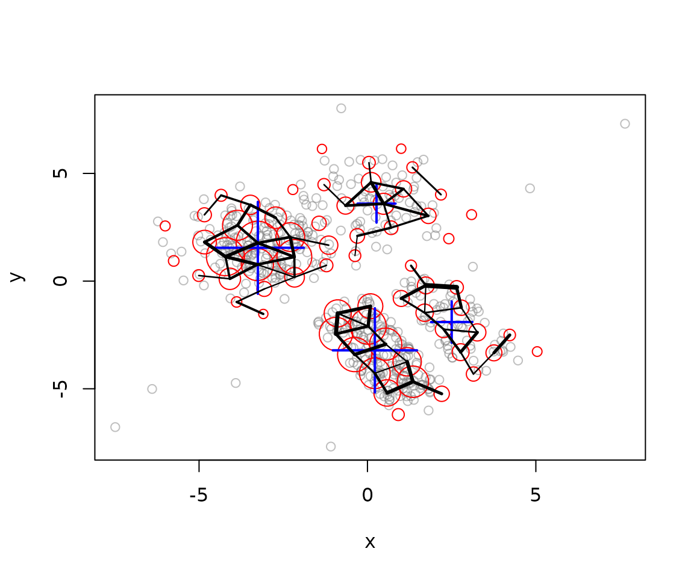
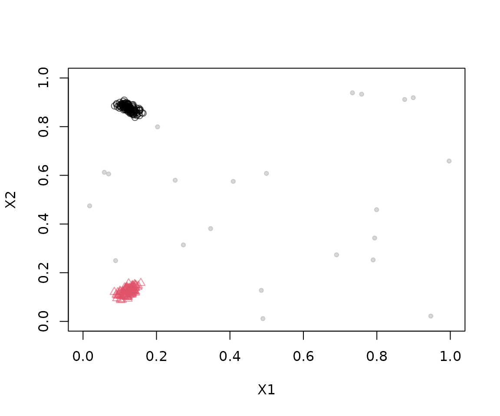
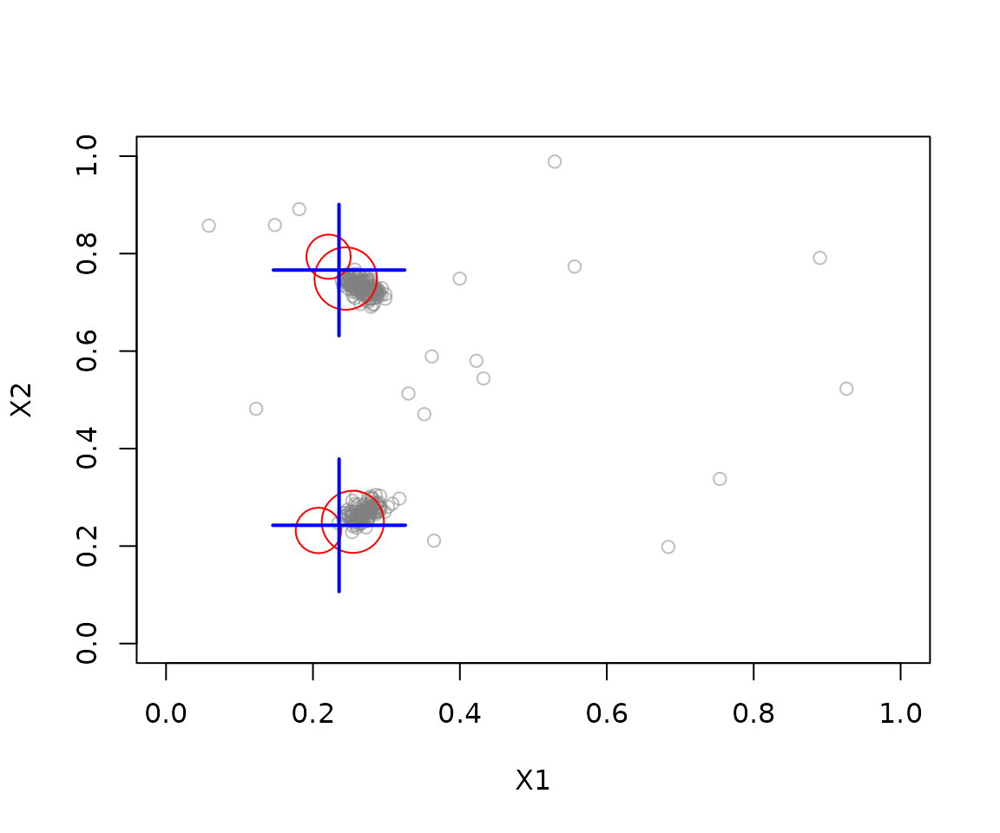
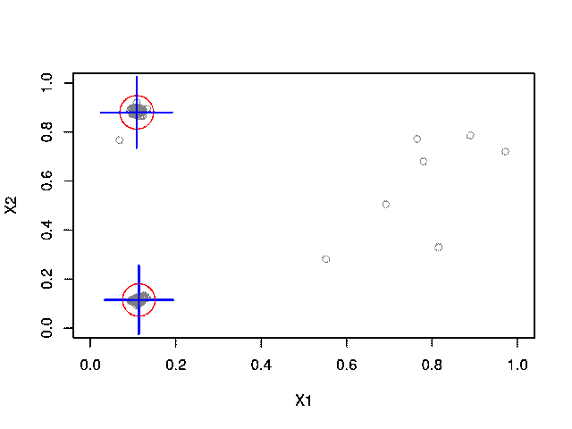

The package stream provides the reference implementation
of the DBSTREAM algorithm (Hahsler and Bolaños, 2016), a density-based
data steam clustering algorithm that uses density between micro-clusters
via a shared density graph to form larger clusters.
Advantages of DBSTREAM
- Single pass with bounded memory. Each point is processed once as it arrives and is only used to update a small set of micro-clusters, so the stream never needs to be stored.
-
No need to specify the number of clusters. The
number of macro-clusters follows from the data and the shared-density
threshold
alpha, rather than being fixed in advance as in k-means-style methods. - Arbitrarily shaped clusters. Because micro-clusters are connected by the density of points they share, reclustering can follow non-spherical clusters, not just compact, round ones.
- Robust to noise. Weak micro-clusters and weak shared-density entries are removed, so sparse noise does not form or join clusters.
- Better reclustering than centers alone. Reclustering methods that only use micro-cluster centers and weights can merge clusters that are close but separated by a low-density gap. The shared density captures that gap directly (Hahsler and Bolaños, 2016).
- Adapts to change. Fading of old observations lets the clustering follow an evolving stream.
Example 1: Clustering Static Clusters with Different Densities
Defining the data stream
The Bars and Gaussians generator contains two Gaussian clusters and two rectangular clusters with different densities, plus noise. Store 1500 points in memory so that plots and experiments can reuse exactly the same data.
stream <- DSD_Memory(DSD_BarsAndGaussians(noise = 0.05), n = 10000)
plot(stream, n = 1000)
Plotting a stream consumes points. Resetting the memory stream puts its cursor back at the first point. We will use the first 1000 points for training and the remaining 500 for evaluation.
reset_stream(stream)Clustering with DBSTREAM
DBSTREAM uses the radius r controls the scale of the
micro-clusters. A smaller radius can preserve finer structure but
usually requires more micro-clusters. Choose it relative to the scale of
the features; the value below is specific to this data. With
shared_density = TRUE, DBSTREAM records points shared by
overlapping micro-clusters. Reclustering uses this evidence to decide
which micro-clusters belong together. The parameter alpha
controls the minimum shared-density proportion needed to connect
them.
dbstream<- DSC_DBSTREAM(r = 1, shared_density = TRUE, alpha = 0.3, minweight = .1)
update(dbstream, stream, n = 5000)
dbstream
#> DBSTREAM
#> Class: DSC_DBSTREAM, DSC_Micro, DSC_R, DSC
#> Number of micro-clusters: 64
#> Number of macro-clusters: 4Updating the clustering with 5000 points from the stream creates micro-clusters. We can visual the clustering. Red bubbles are the micro-clusters where the size shows how many data points they represent. The shared density is shown as black lines. Wider lines represent more shared density. The macro-clusters represent micro clusters connected by sufficient shared density and are shown by big blue crosses.
plot(dbstream, dsd = stream, type = "both", shared_density = TRUE, n = 500)
DBSTREAM is able to identify the four clusters.
Evaluating the clustering
Because the generator knows the true cluster of each point, we can
measure how well the macro-clusters match the truth.
evaluate_static() draws new points from the stream (here
the next 1000, which were not used for training), assigns them to the
closest micro-cluster, and uses that micro-cluster’s macro-cluster as
the prediction. We report two external measures:
- Purity is the fraction of points that belong to the majority true class of the cluster they were assigned to. It ranges from 0 to 1 and is easy to interpret, but it rewards splitting the data into many small clusters.
- The adjusted Rand index (
crand) measures agreement between the clustering and the true classes, corrected for chance. It is 1 for a perfect match and around 0 for a random assignment, so it also penalizes over-splitting.
evaluate_static(dbstream, stream, n = 1000,
measure = c("purity", "crand"), type = "macro", assign = "micro")
#> Evaluation results for macro-clusters.
#> Points were assigned to micro-clusters.
#>
#> purity cRand
#> 0.8662129 0.9106273Comparing with type = "micro" illustrates why both
measures are useful: the many micro-clusters have high purity, but a low
adjusted Rand index because they split the true clusters into many
pieces.
evaluate_static(dbstream, stream, n = 1000,
measure = c("purity", "crand"), type = "micro")
#> Evaluation results for micro-clusters.
#> Points were assigned to micro-clusters.
#>
#> purity cRand
#> 0.9525300 0.1234921Example2: Cluster Non-Stationary Data
To be able to addapt to nonstationary data, DBSTREAM fades older
observations using lambda. gaptime determines
how often weak micro-clusters and weak shared-density entries are
removed, and Cm controls the minimum micro-cluster weight.
These settings interact with the stream’s speed of change and arrival
rate.
Defining a dataset with moving clusters
DSD_Benchmark(1) generates two clusters that move
diagonally across the unit square and intersect in the middle, together
with background noise. Plotting a stream consumes points, so we plot a
short section of a separate generator.
plot(DSD_Benchmark(1), n = 250, xlim = c(0, 1), ylim = c(0, 1))
Perform dynamic stream clustering
Here we use a radius r of 0.05, which suits the unit
square, and a lambda of 0.01 so that older points are
forgotten quickly enough to follow the movement.
set.seed(1000)
moving_stream <- DSD_Benchmark(1)
moving_dbstream <- DSC_DBSTREAM(r = 0.05, lambda = 0.01)
update(moving_dbstream, moving_stream, n = 1000)
plot(moving_dbstream, dsd = moving_stream, type = "both",
xlim = c(0, 1), ylim = c(0, 1), n = 250)
The following animation processes 5000 points in batches of 100 and shows DBSTREAM’s micro- and macro-clusters after each batch.
set.seed(1000)
animation_stream <- DSD_Benchmark(1)
animation_model <- DSC_DBSTREAM(r = 0.05, lambda = 0.01)
res <- animate_cluster(animation_model,
animation_stream,
horizon = 100,
n = 5000,
wait = 0, # for use in a notebook
plot.args = list(xlim = c(0, 1), ylim = c(0, 1),
type = "both"))
Near the crossing, the two generating clusters overlap and are hard to separate using only the observed features. See the “Clustering moving data” vignette for a comparison with other stream clustering algorithms on the same data.
References
Hahsler, M., and Bolaños, M. (2016). Clustering data streams based on shared density between micro-clusters. IEEE Transactions on Knowledge and Data Engineering, 28(6), 1449–1461.
Hahsler, M., Bolaños, M., and Forrest, J. (2017). Introduction to stream: An extensible framework for data stream clustering research with R. Journal of Statistical Software, 76(14), 1–50. doi:10.18637/jss.v076.i14.